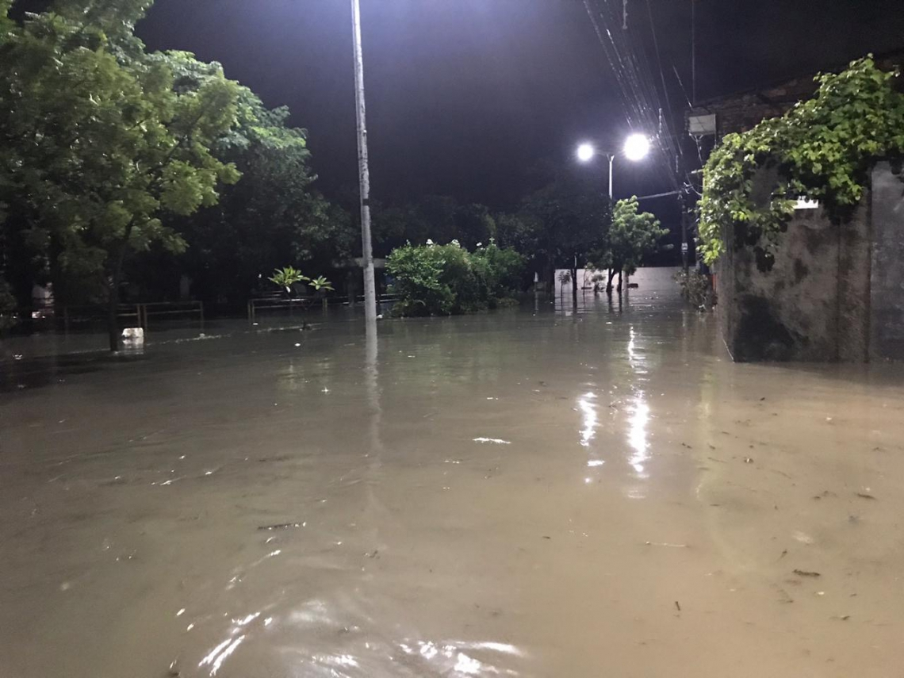
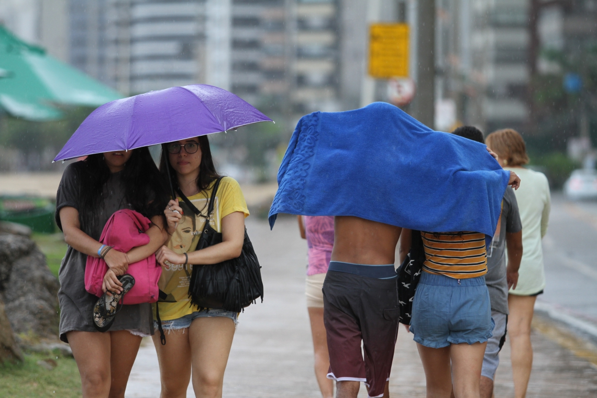
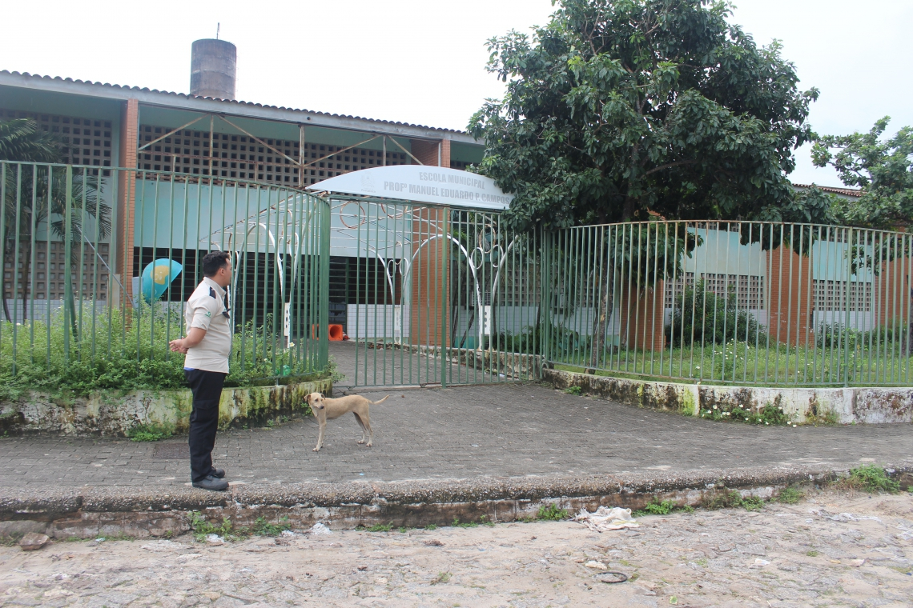

<section>
	<div id="carouselExampleFade" class="carousel slide carousel-fade" data-ride="carousel">
		<div class="carousel-inner">
			<div class="carousel-item active">
				
				<div class="carousel-caption d-none d-md-block" id="textCarousel">
					<h2>Canal do Conjunto Ceará, em Fortaleza</h2>
					<p><b>O canal do Conjunto Ceará, em Fortaleza, transbordou na madrugada deste domingo,
							28, causando alagamentos nas ruas e transtornos aos moradores do bairro de Fortaleza.
							Na Capital cearense, a Fundação de Meteorologia e Recursos Hídricos (Funceme) registrou 72
							milímetros de chuva entre as 7 horas de ontem e a manhã deste domingo.</b>
					</p>
				</div>
			</div>
			<div class="carousel-item">
				
				<div class="carousel-caption d-none d-md-block">
					<h2>As chuvas do mês de abril no Ceará</h2>
					<p><b>As chuvas do mês de abril no Ceará superaram a média histórica para o período no Ceará. Até as
							7
							horas desta segunda-feira, 29, a Fundação Cearense de Meteorologia e Recursos Hídricos
							(Funceme)
							registra chuvas de 193,2 milímetros. A média para os 30 dias do mês é de 188 milímetros.
							Assim,
							as chuvas ficam 2,7% acima da média.</b>
					</p>
				</div>
			</div>
			<div class="carousel-item">
				
				<div class="carousel-caption d-none d-md-block">
					<h2>A rua Martins Camelo, no bairro Sabiaguaba</h2>
					<p><b> A rua Martins Camelo, no bairro Sabiaguaba, está há mais de uma semana inundada com a água
							acumulada das chuvas. O volume chegou a invadir casas e impedir a circulação de residentes
							da
							área. Com isso, cerca de 12 famílias estão abrigadas provisoriamente na Escola Municipal
							Manuel
							Eduardo Siqueira Campos desde sábado, 20. Apesar de receber colchonetes e cestas básicas da
							Defesa Civil, além de ajuda da comunidade, os moradores seguem aflitos por não ter
							perspectiva
							de quando poderão voltar para suas residências.</b>
					</p>
				</div>
			</div>
		</div>
		<a class="carousel-control-prev" href="#carouselExampleFade" role="button" data-slide="prev">
			<span class="carousel-control-prev-icon" aria-hidden="true"></span>
			<span class="sr-only">Previous</span>
		</a>
		<a class="carousel-control-next" href="#carouselExampleFade" role="button" data-slide="next">
			<span class="carousel-control-next-icon" aria-hidden="true"></span>
			<span class="sr-only">Next</span>
		</a>
	</div>

</section>